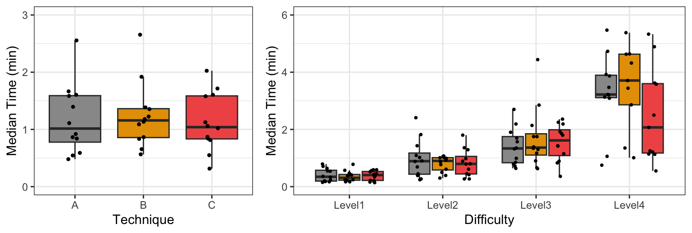

The illusory promise of the Aligned Rank Transform
A systematic study of rank transformations
Theophanis Tsandilas ![]()
Géry Casiez
1 Experimental method
We can now detail our experimental method. We evaluate the standard parametric approach (PAR) and the three rank-transformation methods (RNK, INT, and ART) that we introduced earlier. We conduct a series of Monte Carlo experiments that assess their performance under a variety of experimental configurations:
Distributions. We evaluate both ratio and ordinal data, drawn from the following distributions:
- Normal distribution \(\mathcal{N}(\mu, \sigma^2)\), where \(\mu\) is its mean and \(\sigma^2\) is its standard deviation. For most experiments where variances are equal, we set \(\sigma^2 = 1\).
- Log-normal distribution \(\mathcal{LogN}(\mu, \sigma^2)\), where \(\mu\) is its mean and \(\sigma^2\) is its standard deviation at the logarithmic scale. The log-normal distribution is a good model for various measures bounded by zero, such as task-completion times. We set \(\sigma = 1\) in our main experiments but evaluate a wider range of parameters in Appendix I.
- Exponential distribution \(Exp(\lambda)\), where \(\lambda\) is its rate. The exponential distribution naturally emerges when describing the time elapsed between events. For example, we could use it to model the time a random person spends with a public display, or the waiting time before a new person approaches to interact with the display, when the average waiting time is \(\frac{1}{\lambda}\).
- Cauchy distribution \(\mathcal{Cauchy}(x_0, \gamma)\), where \(x_0\) defines its location (median) and \(\gamma\) defines its scale. The Cauchy distribution is the distribution of the ratio of two independent normally distributed random variables. It rarely emerges in practice. However, it is commonly used in statistics to test the robustness of statistical procedures because both its mean and variance are undefined. As we discussed earlier, past evaluations of ART (Mansouri and Chang 1995; Elkin et al. 2021) show that the method fails under the Cauchy distribution. We set \(\gamma = 1\).
- Poisson distribution \(\mathcal{Pois}(\lambda)\), where \(\lambda\) is its rate. It expresses the probability of a given number of events in a fixed interval of time. For example, we could use it to model the number of people who interact with a public display in an hour, when the average rate is \(\lambda\) people per hour.
- Binomial distribution \(\mathcal{B}(\kappa, p)\), where \(\kappa\) defines the number of independent Bernoulli trials and \(p\) is the probability of error or success of each trial. It frequently appears in HCI research, as it can model the number of successes and failures in a series of experimental tasks. We set \(\kappa = 10\) in our main experiments but evaluate a wider range of parameters in Appendix I.
- Distributions of Likert-item responses with 5, 7, and 11 discrete levels.
Experimental designs. We present results for five experimental designs. To simplify our presentation, we start with (i) a 4 \(\times\) 3 within-subjects factorial design. We then show how our conclusions generalize to four additional designs: (ii) a 2 \(\times\) 3 between-subjects design; (iii) a 2 \(\times\) 4 mixed design, with a between-subjects factor and a within-subjects factor; (iv) a 2 \(\times\) 2 \(\times\) 2 within-subjects design; and (v) a 3 \(\times\) 3 \(\times\) 3 within-subjects design.
Sample sizes. We focus on three sample sizes, \(n=10\), \(n=20\), and \(n=30\), where \(n\) represents the cell size in an experimental design. However, for certain scenarios, we also report results for larger sample sizes, up to \(n = 512\). In within-subjects designs, where all factors are treated as repeated measures, \(n\) corresponds to the number of subjects \(N\) (commonly human participants in HCI research). In contrast, in a 2 \(\times\) 3 between-subjects design, a cell size of \(n = 20\), implies a total of \(N = 120\) subjects.
Equal vs. unequal variances. For normal and ordinal distributions, we test the robustness of the methods when variances are unequal.
Evaluation measures. In addition to Type I error rates, we compare the statistical power of the methods and compare their effect size estimates with ground-truth estimates.
Magnitude of effects. We analyze both main and interaction effects, examining how increasing the magnitude of effect of one factor influences the Type I error rates of other factors and their interactions. In addition, we examine how increasing two main effects in parallel influences the Type I error rate of their interaction, while emphasizing that the definition of the null hypothesis in this case is ambiguous.
Previous evaluations of rank transformation methods (Beasley, Erickson, and Allison 2009; Lüpsen 2018) have also examined unbalanced designs, where cell sizes vary across the levels of a factor. When combined with unequal variances, such designs often pose challenges for both parametric procedures (Blanca et al. 2018) and rank transformation methods (Beasley, Erickson, and Allison 2009; Lüpsen 2018). As noted earlier, we do not consider unbalanced designs in our main article. However, we provide additional experimental results on missing data in Appendix I.
Statistical modeling
For simplicity, we explain here our modeling approach for two factors, but its extension to three factors is straightforward.
Linear component. The base of our data generation process for all distributions is the following linear term:
\[ \ell_{ijk} = \mu + s_k + a_1 x_{1i} + a_2 x_{2j} + a_{12} x_{1i} x_{2j} \tag{1}\]
\(\mu\) is the grand mean
\(s_k \sim \mathcal{N}(0, \sigma_s^2)\) is the random intercept effect of the k-th subject, where \(k = 1..n\)
\(x_{1i}\) is a numerical encoding of the i-th level of factor \(X_1\), where \(i = 1..m_1\)
\(x_{2j}\) is a numerical encoding of the j-th level of factor \(X_2\), where \(j = 1..m_2\)
\(a_1\), \(a_2\), and \(a_{12}\) express the magnitude of main and interaction effects
While random slope effects can have an impact on real experimental data (Barr et al. 2013), we do not consider them here for two main reasons: (1) to be consistent with previous evaluations of the ART procedure (Elkin et al. 2021); and (2) because mixed-effects procedures with random slope effects are computationally demanding, adding strain to simulation resources. However, there is no good reason to believe that adding random slope effects would impact our findings and conclusions.
Encoding the levels of factors. To encode the levels of the two factors \(x_{1i} \in X_1\) and \(x_{2j} \in X_2\) we proceed as follows:
We normalize the distance between their first and their second levels such that \(x_{12} - x_{11} = 1\) and \(x_{22} - x_{21} = 1\). This approach enables us to conveniently control for the main and interaction effects by simply varying the parameters \(a_1\), \(a_2\), and \(a_{12}\).
For the remaining levels, we randomly sample from a uniform distribution that spans the range between these two extreme levels, i.e., between \(x_{11}\) and \(x_{12}\) for \(X_1\), and between \(x_{21}\) and \(x_{22}\) for \(X_2\). This approach allows us to generate and evaluate a substantial variety of configurations, each representing different relative effects between levels.
We require all levels to sum up to 0, or \(\sum\limits_{i=1}^{m_1} x_{1i} = 0\) and \(\sum\limits_{j=1}^{m_2} x_{2j} = 0\), which ensures that the grand mean is \(\mu\).
For example, we can encode a factor with four levels as \(\{-.6, .4, .1, .1\}\) or as \(\{-.5, .5, .3, -.3\}\).
Generating ratio data. We adopt generalized linear modeling (Bolker et al. 2009) for ratio data, where we use an inverse link function \(g^{-1}\) to make the connection between \(\ell_{ijk}\) and the location parameter of the distribution of interest:
\[
Y_{ijk} \sim \mathcal{F}(location=g^{-1}(\ell_{ijk}), ...)
\tag{2}\]
where \(\mathcal{F}\) denotes the probability density (or mass) function from which we draw the responses \(Y_{ijk}\). For example, the mean of the exponential distribution is equal to \(1 / \lambda\), where \(\lambda\) is its rate parameter. This mean is linked to the linear term through the function \(g^{-1}(x) = e^{x}\), and therefore, \(\lambda = e^{-\ell_{ijk}}\). Or the link function commonly used for the binomial distribution is the logit function, but its inverse if the logistic function \(g^{-1}(x) = 1 / (1 + e^{-x})\).
Table 1 presents how the location parameters of the other distributions are linked to the linear term. We emphasize that the Cauchy distribution does not define a GLM (since it does not belong to the exponential family), but we use a model that connects its location (median) through the identity link.
| distribution | location parameter | description |
|---|---|---|
| Normal | \(\mu = \ell_{ijk}\) | mean |
| Log-normal | \(\mu = \ell_{ijk}\) | mean at logarithmic scale (logarithm of median) |
| Exponential | \(\lambda = e^{-\ell_{ijk}}\) | rate (1 / mean) |
| Cauchy | \(x_0 = \ell_{ijk}\) | median |
| Poisson | \(\lambda = e^{\ell_{ijk}}\) | rate (mean) |
| Binomial | \(p = 1 / (1 + e^{-\ell_{ijk}})\) | probability of success or error |
Generating ordinal data. For generating ordinal data, we follow a latent-variable approach as explained by Liddell and Kruschke (2018). Specifically, we consider that there is a continuous latent variable that follows a normal distribution: \[ Y_{ijk}^* \sim \mathcal{N}(\mu = \ell_{ijk}, \sigma^2 = 1) \tag{3}\] From this, we derive discrete responses \(d = 1,2 ... D\) by applying fixed thresholds \(\tau_d \in (-\infty, \infty)\) as follows: \[ \begin{aligned} Y_{ijk} = d\ \ \text{if}\ \ \tau_{d-1} < Y_{ijk}^* \leq \tau_d \end{aligned} \tag{4}\] Since, in practice, \(\tau_0 = -\infty\) and \(\tau_D = \infty\), generating responses with \(D\) discrete levels requires \(D-1\) thresholds.
Effects and population control
We next detail how we select the parameters of the linear component (see Equation 1) for the various distributions, as well as the thresholds of the ordinal model (see Equation 4).
Magnitude of effects. We control the magnitude of effects by varying \(a_1\), \(a_2\), and, for some experiments (those evaluating power for interactions), \(a_{12}\). Figure 1 presents normal distributions (\(\sigma^2 = 1\)) generated across the range of values of \(a_1\) used to evaluate Type I error rates. In these examples, we illustrate effects for a factor with three categorical levels and, for clarity, disregard between-subject variability (\(\sigma_k^2 = 0\)).
Grand mean and variance parameters. We select the mean term \(\mu\) to match a target location of the responses. Table 2 reports the target location for each distribution, which is typically the overall mean (or the median in the case of the Cauchy distribution). We describe how \(\mu\) is derived from these parameters in Appendix II.
| Normal | Log-normal | Exponential | Cauchy | Poisson | Binomial | Ordinal |
|---|---|---|---|---|---|---|
| 0 | 1 | 0.5 | 0 | 3 | 0.1 (per trial) | 0 |
Figure 2 shows distributions generated with these location values when \(a_1 = 2\) for a factor with three categorical levels.

In practice, we randomly choose the standard deviation \(\sigma_k^2\) — which determines between-subject variability — from the interval \([0.1, 0.5]\), drawing each value from a uniform distribution.
Thresholds of ordinal scales. For ordinal data, we evaluate \(D =\) 5, 7, or 11 discrete levels. To derive the discretization thresholds \(\tau_d\), we first consider the range \([-2SD, 2SD]\) , where \(SD\) is the overall standard deviation of the latent variable \(Y^{*}_{ijk}\). We then divide this range into 5, 7, or 11 intervals, following two different strategies: (i) setting thresholds to be equidistant; or (ii) considering flexible thresholds, randomly drawing their position in the above range.
Figure 3 presents examples of equidistant and flexible thresholds for a 5-level scale when the magnitude of main effect of \(X_1\) is either \(a_1 = 2\) or \(a_1 = 8\), while all other effects are zero.

Implementation of rank transformation methods
For the aligned rank transformation (ART), we use the R implementation of ARTool v0.11.1 (Kay et al. 2021). For the pure rank transformation (RNK), we use R’s rank() function. We use the Rankit formulation (Bliss, Greenwood, and White 1956) for the inverse normal transformation (INT), as explained earlier.
Unless stated otherwise, we analyze the data using ANOVA with R’s aov() function and the model specification Y' ~ X1 * X2 + Error(S). For balanced designs, this approach yields results that are identical or nearly identical to those obtained using R’s lmer() function with the model specification Y' ~ X1 * X2 + (1 | S).
Evaluation measures
Significance tests have two types of errors. Type I errors, or false positives, are mistaken rejections of the null hypothesis. Type II errors, of false negatives, are failures to reject a null hypothesis that is actually true. In our illustrative example in ?@fig-example, a Type I error is finding that there is an effect of the choice of the technique on time performance. A Type II error, in turn, is finding that the task difficulty has no effect on time performance.
Statistical significance testing requires setting a significance threshold known as significance or \(\alpha\) (alpha) level, with typical values \(\alpha = .05\) and \(\alpha = .01\). The Type I error rate of a well-behaved significance test should be close to this nominal alpha level. An error rate clearly above this level suggests that the significance test is too liberal, while an error rate clearly below this level suggests that the test is too conservative. Four of our experiments specifically assess the Type I error rate of the methods. We test two significance levels: \(\alpha = .05\) and \(\alpha = .01\). For brevity, we only report results for \(\alpha = .05\) in the main paper and include additional results in our supplementary material.
We do not directly evaluate Type II errors. Instead, we report on statistical power defined as \(Power = 1 - \beta\), where \(\beta\) is the rate of Type II errors. Significance tests do not provide any power guarantees. However, we can compare the power of different methods to evaluate their relative performance. In addition to power, we assess effect size estimates, where we use as ground truth the estimates of a parametric ANOVA conducted on the latent variable \(\mathcal{Y}\). While partial \(\eta^2\) is the most commonly used effect size measure, we also evaluate Cohen’s \(f\), as its expected value is proportional to the real magnitude of effect. However, \(\eta^2\) can be directly derived from Cohen’s \(f\) as follows:
\[ \eta^2 = \frac{f^2}{1 + f^2} \tag{5}\]
As explained earlier, interaction effects are distorted when the latent variable \(\mathcal{Y}\) is transformed to produce the observed responses. These transformations also influence the Type I error rates and statistical power we observe. In this analysis, we focus on evaluating these measures with respect to the effects applied to the latent variable \(\mathcal{Y}\). We explicitly make this distinction whenever it is relevant to our discussion.
Hardware platform and iterations
Our experimental R code is available in our supplementary material. We ran our experiments separately in a cluster of 8 machines Dell R640 Intel Xeon Silver 4112 2.6GHz with 4 cores and 64 GB memory. Our R code was parallelized to use all four cores of each machine. Some experiments took a few hours to complete, while others took several days.
To estimate the power and Type I error rates of the four methods with enough precision, we ran \(5000\) iterations for each population configuration and each sample size.
References
Barr, Dale J, Roger Levy, Christoph Scheepers, and Harry J Tily. 2013. “Random Effects Structure for Confirmatory Hypothesis Testing: Keep It Maximal.” J Mem Lang 68 (3). https://doi.org/10.1016/j.jml.2012.11.001.
Beasley, T Mark, Stephen Erickson, and David B Allison. 2009. “Rank-Based Inverse Normal Transformations Are Increasingly Used, but Are They Merited?” Behav Genet 39 (5): 580–595. https://doi.org/10.1007/s10519-009-9281-0.
Blanca, Marı́a J., Rafael Alarcón, Jaume Arnau, Roser Bono, and Rebecca Bendayan. 2018. “Effect of Variance Ratio on ANOVA Robustness: Might 1.5 Be the Limit?” Behavior Research Methods 50 (3): 937–962. https://doi.org/10.3758/s13428-017-0918-2.
Bliss, C. I., Mary L. Greenwood, and Edna Sakamoto White. 1956. “A Rankit Analysis of Paired Comparisons for Measuring the Effect of Sprays on Flavor.” Biometrics 12 (4): 381–403. http://www.jstor.org/stable/3001679.
Bolker, Benjamin M., Mollie E. Brooks, Connie J. Clark, Shane W. Geange, John R. Poulsen, M. Henry H. Stevens, and Jada-Simone S. White. 2009. “Generalized Linear Mixed Models: A Practical Guide for Ecology and Evolution.” Trends in Ecology & Evolution 24 (3): 127–135. https://doi.org/10.1016/j.tree.2008.10.008.
Elkin, Lisa A., Matthew Kay, James J. Higgins, and Jacob O. Wobbrock. 2021. “An Aligned Rank Transform Procedure for Multifactor Contrast Tests.” The 34th Annual ACM Symposium on User Interface Software and Technology (New York, NY, USA), UIST ’21, 2021, 754–768. https://doi.org/10.1145/3472749.3474784.
Kay, Matthew, Lisa A. Elkin, James J. Higgins, and Jacob O. Wobbrock. 2021. ARTool r Package. https://cran.r-project.org/web/packages/ARTool.
Liddell, Torrin M., and John K. Kruschke. 2018. “Analyzing Ordinal Data with Metric Models: What Could Possibly Go Wrong?” Journal of Experimental Social Psychology 79: 328–348. https://doi.org/10.1016/j.jesp.2018.08.009.
Lüpsen, Haiko. 2018. “Comparison of Nonparametric Analysis of Variance Methods: A Vote for van Der Waerden.” Communications in Statistics - Simulation and Computation 47 (9): 2547–2576. https://doi.org/10.1080/03610918.2017.1353613.
Mansouri, H., and G.-H. Chang. 1995. “A Comparative Study of Some Rank Tests for Interaction.” Computational Statistics & Data Analysis 19 (1): 85–96. https://doi.org/10.1016/0167-9473(93)E0045-6.